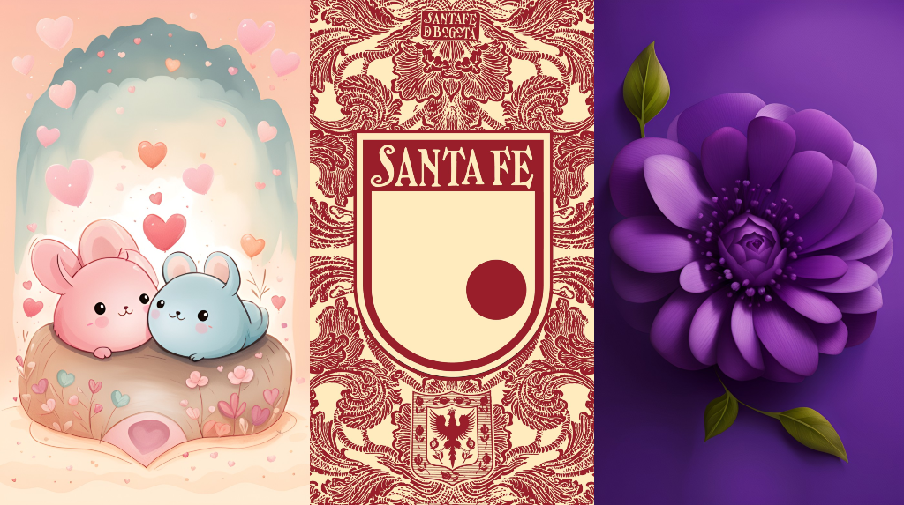

Dias antes de la bailanta
X days X hours X minutes X seconds
Tarjeta Virtual
Clic aqui para ganarse 6 cuadrillones de pesos! (mentira, es un mensaje de felicitaciones)
.
.
.
Felicitaciones, Hurras y Vivas!
Yo me considero un extraño, una persona que solo ha interactuado con ustedes mediante Twitter y poco mas, sin embargo, la felicidad que me da ver a un par de personas tan buenas y agradables llegar a este punto, en donde su amor es realizado, me impulso a diseñar esta pagina y este mensaje.
Hace 3 años y medio los conoci, no recuerdo muy bien el como ni el porque, probablemente tuvo que ver con Santa Fe, algun mensaje en cuanto al juego de ese dia, o talvez fue un comentario debajo del video de la ratica, quien sabe. Lo que importa es que era de las primeras veces que interactuaba con alguien fuera de la vida real, y en poco tiempo me di cuenta que habia sido buena idea, de que el extraño en la otra parte de la pantalla era simpatico, gracioso y talentoso.
A la señorita Vanessa no la conozco muy bien, pero para lo que me compete, es tambien una persona muy inteligente y simpatica, radiante e inflexible en sus pensamientos.
Todos hemos cambiado en estos 3 años y medio, algunos para mejor y otros para peor, y muy probablemente pasaran los años y seguiremos cambiando aun mas, pero lo que importa es siempre estar juntos, siempre tener almenos una persona que nos diga o nos enseñe que la vida va a mejorar, que todo va a salir bien al final.
El matrimonio en mi personal opinion es la cosa mas fantastica de este mundo, el acto de amor mas hermoso y puro, la culminacion de meses o años de acostumbrarse al otro, de sentir felicidad y tristeza con la felicidad y tristeza del otro, de explotar en alegria por los gustos en comun y trabajar tranquilo para resolver conflictos. No hay nada mas bonito que un acto de amor, y no hay mejor acto de amor que el matrimonio. El fuego que mantiene viva a la humanidad, es el Amor.
Cuando las paredes se caen, cuando pierdes todo lo que tienes y la luz de tu mente no puede quemar la oscuridad, se tendran siempre a ustedes, y a todos los que aman.
Felicitaciones! Yupi! Hurra! Viva! Que este matrimonio dure un millon de años, y cuando pasen los años y asciendan al reino de los cielos, que ojala se amen otro millon de años mas.
(Mil disculpas por usar arte IA en el collage, pero es que soy bien maluco para dibujar)
Con todo mi aprecio y agradeciendo la atencion de antemano.
- Nicolas Daza Reina (a veces conocido como NeoOmegav)